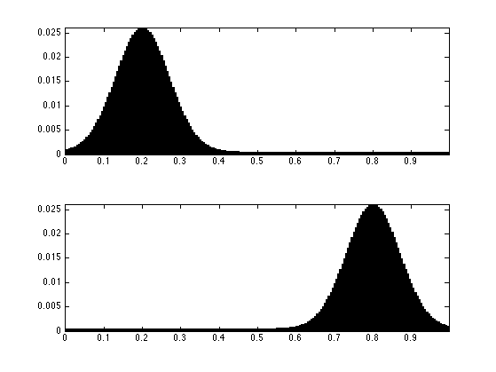
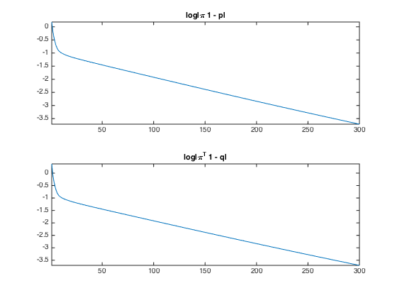
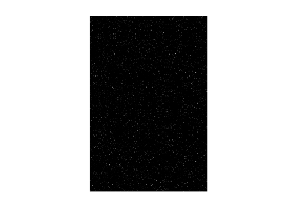
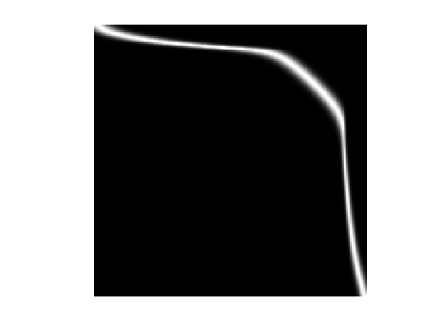
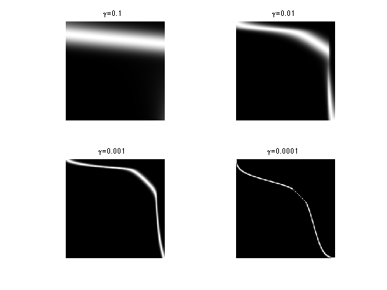

Entropic Regularization of Optimal Transport
This numerical tours exposes the general methodology of regularizing the optimal transport (OT) linear program using entropy. This allows to derive fast computation algorithm based on iterative projections according to a Kulback-Leiber divergence. \[ \DeclareMathOperator{\KL}{KL} \newcommand{\KLdiv}[2]{\KL\pa{#1 | #2}} \newcommand{\KLproj}{P^{\tiny\KL}} \def\ones{\mathbb{I}} \]
Contents
Installing toolboxes and setting up the path.
You need to download the following files: signal toolbox and general toolbox.
You need to unzip these toolboxes in your working directory, so that you have toolbox_signal and toolbox_general in your directory.
For Scilab user: you must replace the Matlab comment '%' by its Scilab counterpart '//'.
Recommandation: You should create a text file named for instance numericaltour.sce (in Scilab) or numericaltour.m (in Matlab) to write all the Scilab/Matlab command you want to execute. Then, simply run exec('numericaltour.sce'); (in Scilab) or numericaltour; (in Matlab) to run the commands.
Execute this line only if you are using Matlab.
getd = @(p)path(p,path); % scilab users must *not* execute this
Then you can add the toolboxes to the path.
getd('toolbox_signal/'); getd('toolbox_general/');
Entropic Regularization of Optimal Transport
We consider two input histograms \(p,q \in \Si_N\), where we denote the simplex in \(\RR^N\) \[ \Si_{N} = \enscond{ p \in (\RR^+)^N }{ \sum_i p_i = 1 }. \] We consider the following discrete regularized transport \[ W_\ga(p,q) = \umin{\pi \in \Pi(p,q)} \dotp{C}{\pi} - \ga E(\pi). \] where the polytope of coupling is defined as \[ \Pi(p,q) = \enscond{\pi \in (\RR^+)^{N \times N}}{ \pi \ones = p, \pi^* \ones = q }, \] and for \(f \in (\RR^+)^{P}\) for some \(P > 0\), we define its entropy as \[ E(f) = - \sum_{i=1}^N f_i ( \log(f_i) - 1). \]
When \(\ga=0\) one recovers the classical (discrete) optimal transport. We refer to the monograph [Villani] for more details about OT. The idea of regularizing transport to allows for faster computation is introduced in [Cuturi].
Here the matrix \(C \in (\RR^+)^{N \times N} \) defines the ground cost, i.e. \(C_{i,j}\) is the cost of moving mass from a bin indexed by \(i\) to a bin indexed by \(j\).
The regularized transportation problem can be re-written as a projection \[ W_\ga(p,q) = \ga \umin{\pi \in \Pi(p,q)} \KLdiv{\pi}{\bar \pi} \qwhereq \bar\pi_{i,j} = e^{ -\frac{C_{i,j}}{\ga} } \] of \(\bar\pi\) according to the Kullback-Leibler divergence. The Kullback-Leibler divergence between \(f, \bar f \in (\RR^+)^P\) is \[ \KLdiv{f}{\bar f} = \sum_{i=1}^P f_{i} \pa{ \log\pa{ \frac{f_i}{\bar f_i} } - 1}. \] With a slight abuse of notation, we extend these definitions for vectors \(\pi \in \RR^{N \times N}\) (and also higher \(d\)-dimensional tensor arrays), so that \(P=N^2\) (or more generally \(P=N^d\)) by replacing the sum over elements \(f_i\) by \(\pi_{i,j}\) with \(i,j=1,\ldots,N\).
Given a convex set \(\Cc \subset \RR^N\), the projection according to the Kullback-Leiber divergence is defined as \[ \KLproj_\Cc(\bar f) = \uargmin{ f \in \Cc } \KLdiv{f}{\bar f}. \]
Iterative Bregman Projection Algorithm
Given affine constraint sets \( (\Cc_1,\ldots,\Cc_K) \), we aim at computing \[ \KLproj_\Cc(\bar \pi) \qwhereq \Cc = \Cc_1 \cap \ldots \cap \Cc_K. \]
This can be achieved, starting by \(\pi_0=\bar\pi\), by iterating \[ \forall \ell \geq 0, \quad \pi_{\ell+1} = \KLproj_{\Cc_\ell}(\pi_\ell), \] where the index of the constraints should be understood modulo \(K\), i.e. we set \( \Cc_{\ell+K}=\Cc_\ell \).
One can indeed show that \(\pi_\ell \rightarrow \KLproj_\Cc(\bar \pi)\). We refer to [BauschkeLewis] for more details about this algorithm and its extension to compute the projection on the intersection of convex sets (Dikstra algorithm).
Iterative Projection for Regularized Transport
We can re-cast the regularized optimal transport problem within this framework by introducing \[ \Cc_1 = \enscond{\pi \in (\RR^+)^{N \times N} }{\pi \ones = p} \qandq \Cc_2 = \enscond{\pi \in (\RR^+)^{N \times N} }{\pi^* \ones = q}\]
The KL projection on \(\Cc_1\) sets are easily computed by divisive normalization of rows. Indeed, denoting \( \pi = \KLproj_{\Cc_1}(\bar \pi) \), one has \[ \forall (i,j), \quad \pi_{i,j} = \frac{ p_i \bar\pi_{i,j} }{ \sum_{s} \bar\pi_{i,s} } \] and similarely for \(\KLproj_{\Cc_1}(\bar \pi) \) by replacing rows by colums.
Size \(N\) of the histograms.
N = 200;
Define \(\KLproj_{\Cc_1}\).
ProjC1 = @(pi,p)pi .* repmat( p./max(sum(pi,2), 1e-10), [1 N] );
Define \(\KLproj_{\Cc_2}\).
ProjC2 = @(pi,q)pi .* repmat( q'./max(sum(pi,1), 1e-10), [N 1] );
We use here a 1-D square Euclidean metric.
x = (0:N-1)'/N; y = x; Y = repmat(y', [N 1]); X = repmat(x, [1 N]); C = abs(X-Y).^2;
Define the histogram \(p,q\)
Gaussian = @(x0,sigma)exp( -(x-x0).^2/(2*sigma^2) ); normalize = @(p)p/sum(p(:)); x0 = .2; y0 = .8; sigma = .07; p = Gaussian(x0,sigma); q = Gaussian(y0,sigma);
Add some minimal mass and normalize.
vmin = .02; p = normalize( p+max(p)*vmin); q = normalize( q+max(q)*vmin);
Display them.
clf; subplot(2,1,1); bar(x, p, 'k'); axis tight; subplot(2,1,2); bar(y, q, 'k'); axis tight;
Exercice 1: (check the solution) Perform the iterations, and display the decay of the errors \[ \norm{\pi_\ell \ones - p} \qandq \norm{\pi_\ell^* \ones - q} \] in log scale.
exo1;
Display the optimal \(\pi\).
clf; imageplot(pi);
For visualization purpose, to more clearly see the optimal map, do a normalization.
normalizeMax = @(pi)pi ./ repmat( max(pi,[],1), [N 1] ); clf; imageplot(normalizeMax(pi));
Exercice 2: (check the solution) Display the transport map for several values of \(\gamma\).
exo2;
%
 Bibliography
- [Villani] Villani, C. (2009). Optimal transport: old and new, volume 338. Springer Verlag.
- [Cuturi] Cuturi, M. (2013). Sinkhorn distances: Lightspeed computation of optimal transport. In Burges, C. J. C., Bottou, L., Ghahramani, Z., and Weinberger, K. Q., editors, Proc. NIPS, pages 2292-2300.
- [AguehCarlier] Agueh, M. and Carlier, G. (2011). Barycenters in the Wasserstein space. SIAM J. on Mathematical Analysis, 43(2):904-924.
- [CuturiDoucet] Cuturi, M. and Doucet, A. (2014). Fast computation of wasserstein barycenters. In Proc. ICML.
- [BauschkeLewis] H. H. Bauschke and A. S. Lewis. Dykstra's algorithm with Bregman projections: a convergence proof. Optimization, 48(4):409-427, 2000.